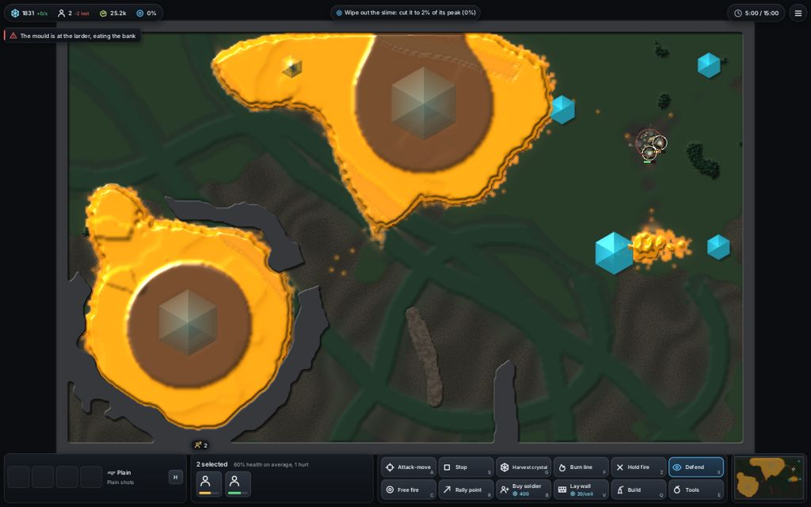

<title>Planet Pressure Ladder</title>
<meta name="claude:viewport-fit-sides" content="cover">
<link rel="stylesheet" href="https://fonts.googleapis.com/css2?family=IBM+Plex+Sans:wght@400;600&family=IBM+Plex+Mono:wght@400;600&family=Space+Grotesk:wght@500;700&display=swap">
<style>
/* Layout: one reading column; a chart of kills against mass, then the tier strip of stills. */
:root {
  --bg: #f3f5ef; --panel: #ffffff; --fg: #1d231c; --muted: #5c6758; --line: #d5dbcf;
  --slime: #d98b12; --squad: #2f7f9e; --bad: #b3402f; --good: #3b7d3a;
  --display: "Space Grotesk", "Segoe UI", system-ui, sans-serif;
  --body: "IBM Plex Sans", "Segoe UI", system-ui, sans-serif;
  --mono: "IBM Plex Mono", ui-monospace, Consolas, monospace;
}
@media (prefers-color-scheme: dark) { :root:not([data-theme="light"]) {
  --bg: #141912; --panel: #1c231a; --fg: #e3e8de; --muted: #9aa695; --line: #333d30;
  --slime: #f0a531; --squad: #5bb3d4; --bad: #e0705e; --good: #7cc27a; color-scheme: dark } }
:root[data-theme="dark"] {
  --bg: #141912; --panel: #1c231a; --fg: #e3e8de; --muted: #9aa695; --line: #333d30;
  --slime: #f0a531; --squad: #5bb3d4; --bad: #e0705e; --good: #7cc27a; color-scheme: dark }
body { background: var(--bg); color: var(--fg); font: 15px/1.55 var(--body);
  padding-left: max(16px, env(safe-area-inset-left, 0px)); padding-right: max(16px, env(safe-area-inset-right, 0px)); padding-block: 28px 56px; }
main { max-width: 1060px; margin: 0 auto; display: grid; gap: 28px; }
h1, h2 { font-family: var(--display); text-wrap: balance; margin: 0; }
h1 { font-size: 30px; } h2 { font-size: 20px; }
p { margin: 0; max-width: 70ch; }
.lede { color: var(--muted); }
section { display: grid; gap: 12px; min-width: 0; }
.wrap { overflow-x: auto; }
table { border-collapse: collapse; font-variant-numeric: tabular-nums; font-size: 14px; min-width: 640px; width: 100%; }
th, td { padding: 6px 10px; border-bottom: 1px solid var(--line); text-align: right; white-space: nowrap; }
th:first-child, td:first-child, th:nth-child(2), td:nth-child(2) { text-align: left; }
th { font: 600 12px var(--mono); color: var(--muted); letter-spacing: .03em; }
.ok { color: var(--good); font-weight: 600; }
svg text { fill: var(--fg); font: 12px var(--mono); }
.chart { background: var(--panel); border: 1px solid var(--line); border-radius: 8px; padding: 12px; }
.key { display: flex; gap: 18px; flex-wrap: wrap; font: 13px var(--mono); color: var(--muted); }
.key span::before { content: ""; display: inline-block; width: 12px; height: 12px; border-radius: 2px; margin-right: 6px; vertical-align: -1px; background: var(--c); }
.tiers { display: grid; grid-template-columns: repeat(auto-fill, minmax(300px, 1fr)); gap: 18px; }
figure { margin: 0; display: grid; gap: 6px; background: var(--panel); border: 1px solid var(--line); border-radius: 8px; padding: 10px; min-width: 0; }
figure img { border-radius: 4px; width: 100%; height: auto; }
figcaption { font-size: 13px; color: var(--muted); }
figcaption b { color: var(--fg); font-family: var(--display); font-size: 15px; }
ul { margin: 0; padding-left: 20px; max-width: 70ch; display: grid; gap: 4px; }
code { font: 13px var(--mono); }
</style>
<main>
  <header style="display:grid;gap:8px">
    <h1>Planet pressure ladder</h1>
    <p class="lede">Run seed 1, planets 1 to 6 (one tier each), filmed headless on software Vulkan, 15 Nov. One seed each, no census. What a four-soldier squad with the depth's average rifle does to each planet's slime in two minutes, and what an idle squad suffers by five.</p>
  </header>

  <section>
    <h2>The squad's kills don't show in the slime's mass</h2>
    <p>Kills a second (blue) against the slime's mass at 2:00 (orange, right scale). The kill rate grows about 2.5x from planet 1 to 6; the slime grows 11x at landing. At 2:00 the slime a squad fired into is within 5% of the idle one on every planet.</p>
    <div class="chart wrap">
      <svg viewBox="0 0 700 300" width="100%" role="img" aria-label="Kills per second and slime mass by planet">
        <g id="grid"></g><g id="bars"></g><g id="line"></g>
      </svg>
    </div>
    <div class="key"><span style="--c:var(--squad)">kills a second, 0:00-2:00</span><span style="--c:var(--slime)">slime mass at 2:00 (idle)</span></div>
    <div class="wrap"><table>
      <thead><tr><th>PLANET</th><th>TIER</th><th>MASS AT LANDING</th><th>IDLE 1:00</th><th>IDLE 2:00</th><th>FIRED ON 2:00</th><th>KILLS 0-2:00</th><th>KILLS/S</th><th>SQUAD LEFT</th></tr></thead>
      <tbody id="rows"></tbody>
    </table></div>
    <p>At planet 1's rate, cutting 98% of its slime would take about 21 minutes with no regrowth (the clock is 15:00); planet 6 about 55 minutes (clock 31:30). The planet is won by income and army size, the 40-soldier rush, not by the gun. What rises from planet to planet is the owner's call (decision D3); this table is the baseline for it.</p>
  </section>

  <section>
    <h2>Idle loses by 5:00</h2>
    <p>Run smoke check: an idle squad must be losing by 5:00 (soldiers lost, slime bigger than at 1:00).</p>
    <div class="wrap"><table style="min-width:520px">
      <thead><tr><th>PLANET</th><th>TIER</th><th>SOLDIERS 0:00 &rarr; 5:00</th><th>WALKERS 1:00 &rarr; 5:00</th><th>CHECK</th></tr></thead>
      <tbody>
        <tr><td>1</td><td>Drifter</td><td>4 &rarr; 2</td><td>15,233 &rarr; 25,226</td><td class="ok">losing</td></tr>
        <tr><td>2</td><td>Sprawler</td><td>4 &rarr; 1</td><td>25,276 &rarr; 46,124</td><td class="ok">losing</td></tr>
        <tr><td>3</td><td>Trunk</td><td>4 &rarr; 3</td><td>46,434 &rarr; 41,173 (28,554 at 2:00)</td><td class="ok">losing</td></tr>
      </tbody>
    </table></div>
    <figure style="max-width:640px"><figcaption><b>Planet 1 at 5:00, idle.</b> 2 of 4 soldiers left, 25,226 walkers.</figcaption></figure>
  </section>

  <section>
    <h2>One still a tier, on its own planet</h2>
    <p>Each planet's whole map at 2:00 with the squad idle, and the squad on attack-move at work at the same time.</p>
    <div class="tiers" id="tiers"></div>
  </section>

  <section>
    <h2>Also in this change</h2>
    <ul>
      <li>A run no longer ends "stuck" while a soldier walks, a pump stands or a building goes up, and in squad mode (free shots) never while a crystal has charge. The goal line warns 20 s before a stuck end.</li>
      <li>The 2% goal counts the slime's mass, a thickened walker twice, on both engines.</li>
      <li>The game writes a play log, <code>larder-world-log-MAP-SEED.txt</code>, beside the replay; <code>playlog</code> reads it (time to 40 soldiers, splits, pumps, kills a minute, frame times).</li>
    </ul>
  </section>
</main>
<script>
const D = [
  [1,"Drifter",13119,17611,20774,20789,1941,16.2,"1 of 4"],
  [2,"Sprawler",23076,26848,35577,35326,1633,13.6,"3 of 4"],
  [3,"Trunk",43304,48527,32725,32260,1356,11.3,"3 of 4"],
  [4,"Swarmer",53574,62205,51055,50173,3790,31.6,"4 of 4"],
  [5,"Sporer",88105,84978,73937,72194,818,6.8,"4 of 4"],
  [6,"Sleeper",144317,142833,133833,140044,4781,39.8,"4 of 4"],
];
const f = n => n.toLocaleString("en-US");
document.getElementById("rows").innerHTML = D.map(r => `<tr><td>${r[0]}</td><td>${r[1]}</td><td>${f(r[2])}</td><td>${f(r[3])}</td><td>${f(r[4])}</td><td>${f(r[5])}</td><td>${f(r[6])}</td><td>${r[7]}</td><td>${r[8]}</td></tr>`).join("");
document.getElementById("tiers").innerHTML = D.map(r => `
  <figure>
  
  <figcaption><b>Planet ${r[0]}: ${r[1]}</b><br>Mass ${f(r[2])} at landing, ${f(r[4])} at 2:00 idle. Squad: ${f(r[6])} kills, ${r[8]} standing.</figcaption></figure>`).join("");
// Chart: x = planets, left axis kills/s 0-45, right axis mass 0-150k.
const W=700,H=300,L=50,R=60,T=16,B=40,pw=(W-L-R)/D.length;
const ky=v=>T+(H-T-B)*(1-v/45), my=v=>T+(H-T-B)*(1-v/150000);
const ns="http://www.w3.org/2000/svg";
const el=(p,n,a,t)=>{const e=document.createElementNS(ns,n);for(const k in a)e.setAttribute(k,a[k]);if(t!=null)e.textContent=t;p.appendChild(e);return e};
const g=document.getElementById("grid"),b=document.getElementById("bars"),l=document.getElementById("line");
for(const v of [0,15,30,45]){el(g,"line",{x1:L,x2:W-R,y1:ky(v),y2:ky(v),stroke:"var(--line)"});el(g,"text",{x:L-8,y:ky(v)+4,"text-anchor":"end"},v);}
for(const v of [0,50000,100000,150000]){el(g,"text",{x:W-R+8,y:my(v)+4},v?v/1000+"k":"0");}
el(g,"text",{x:L-8,y:T-4,"text-anchor":"end"},"kills/s");
el(g,"text",{x:W-R+8,y:T-4},"mass");
let pts=[];
D.forEach((r,i)=>{const x=L+pw*i+pw/2;
  el(b,"rect",{x:x-pw*0.22,y:ky(r[7]),width:pw*0.44,height:ky(0)-ky(r[7]),fill:"var(--squad)",rx:2});
  el(b,"text",{x,y:ky(r[7])-5,"text-anchor":"middle"},r[7]);
  el(g,"text",{x,y:H-B+18,"text-anchor":"middle"},r[0]+" "+r[1]);
  pts.push([x,my(r[4])]);});
el(l,"polyline",{points:pts.map(p=>p.join(",")).join(" "),fill:"none",stroke:"var(--slime)","stroke-width":2.5});
pts.forEach((p,i)=>el(l,"circle",{cx:p[0],cy:p[1],r:4,fill:"var(--slime)"}));
</script>
